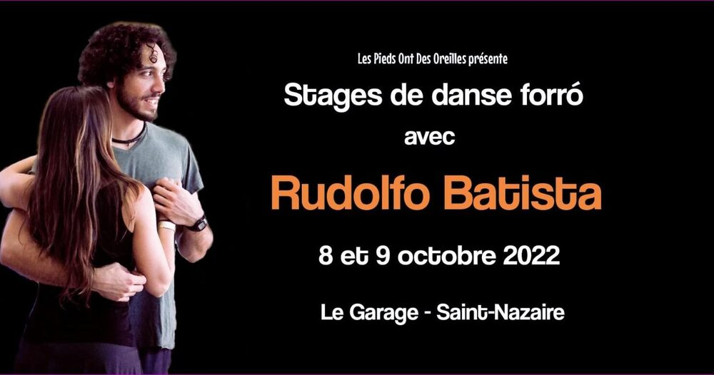

Stage de danse forró avec Rudolfo Batista

Lieu : Le Garage, Saint-Nazaire
Pour notre Gros Week-end forró, nous recevons Rudolfo Batista, danseur, pédagogue, musicien et tourneur, qui a grandi à Olinda dans le Nordeste brésilien. À partir de 14h.